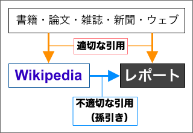
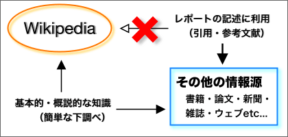

資料の選び方
レポート（報告や小論文）を書くためには、できるだけ多くの参考文献や資料を集める必要がある。しかし、集めた資料のすべてが、そのままレポートに利用できるわけではない。
信頼できない情報にもとづく情報が信頼できない情報であることは言うまでもない。同じように、信頼できない（＝質の低い）参考文献にもとづいたレポートは、信頼できない（＝質の低い）レポートということになってしまうだろう。
そのため、レポートを書く際には、どの参考文献や資料を利用するのか、適切に選択しなければならない。以下に、その目安を示しておく。
信頼性の低い情報の利用
信頼性の低い情報を利用してはいけない。
◊ フリー百科事典『ウィキペディア（Wikipedia）』はできるだけ利用しない
フリー百科事典『ウィキペディア（Wikipedia）』は、様々な分野の情報を容易に入手できるとても便利なサイトである。その一方で、記事の正確性や記述の中立性など、信頼性に対する疑問が指摘されることも少なくない。
筆者の個人的な印象では、不正確な記述が特に多いというわけではなさそうだが、不特定多数が編集するというサイトの性質上、記事が断片的な情報の寄せ集めであることは否定できないように思われる。
断片的な情報の寄せ集めであるということは、記事の一貫性が低いということである。もし、特定の専門家が書いたものであれば、重要だと思われる点を詳しく、そうでないところは簡単に説明するだろう。しかし、不特定多数の書き手が断片的な情報の寄せ集めた場合、重要な点が詳しく説明されているとは限らない。あまり重要でないところが詳しく説明されているかもしれない。
一般に、情報が信頼できるかどうかは、その情報の情報源が信頼できるかどうかということと同じである。また、情報の信頼性は、情報の発信者の信頼性とも同じであるといえる。不特定多数が書き手であるということは、情報の発信者がはっきりしないという点で、信頼性の低い情報になってしまっているおそれがある。
孫引きをしない

日本語版の『ウィキペディア（Wikipedia）』は、特にサブカルチャーに関する項目が充実しているなど、一般の書籍や百科事典にはない特徴を持っている。しかし、近年、『ウィキペディア（Wikipedia）』は、記事の品質を高めようとする中で、出典（ソース）の明示を求める流れが強まっているようだ。これは、独自の情報（『ウィキペディア（Wikipedia）』にしかない情報）をとり除き、引用や参照（要約した引用）によって記事を構成するということである。そのため、『ウィキペディア（Wikipedia）』の引用や参照では、孫引き（二次的な引用）の問題を生じてしまう（参考→「引用と孫引き」＜〔引用の方法〕）。不適切な引用を避ける意味でも、レポートの作成には『ウィキペディア（Wikipedia）』を利用しない方がよい。
百科事典を利用しない
そもそも百科事典は、それぞれの分野の常識的な事柄を一般向けに記述・解説した書物であり、学術的なレポートには利用しないのが望ましい（→辞書や事典はできるだけ引用しない）。『ウィキペディア（Wikipedia）』の百科事典としての品質が高まるほど、レポートへの利用は不適切になると考えるべきである。
ウィキペディアの創始者のジミー・ウェルズさん（４０）は「慈善的に人間の知識を集める事業であり、ブリタニカと同様以上の質をめざして努力している。ただ、百科事典の引用は学術研究の文書には適切でないと言い続けてきた」と話す。（2007年02月23日"asahi.com"）

おおまかな知識を手軽に得るという点で『ウィキペディア（Wikipedia）』を利用するのは、悪い選択ではないだろう（これは『ウィキペディア（Wikipedia）』だけでなく、すべての百科事典にいえることである）。しかし、一定の専門性を持ったレポートを書くのであれば、『ウィキペディア（Wikipedia）』を引用したり、直接参照したりしない方がよい。
◊ ブログやテキストサイトはできるだけ利用しない
ブログやテキストサイトでは、アイディアの出典が明示されないケースが多いと指摘される（参考サイト：「人気ウェブログは頻繁に『無断引用』」／ "Warning: Blogs Can Be Infectious"）。
新聞や雑誌、書籍などから同等の情報が得られるのならば、ブログやテキストサイトの記述を引用したり参照したりしない方がよいだろう。ただし、他の情報源では代替できないものであり、それがレポートにとって重要なものだと考えるのならば、積極的に引用してよい。
常識的な内容の引用
常識的な内容を引用すべきではない。
◊ 辞書や事典はできるだけ引用しない
レポートを書くときには、辞書や事典が必要になる。しかし、辞書や事典は、語の意味や用法・表記を調べるために使うべきものである。一般的にいって、辞書や事典の記述は常識の範囲のものが多く、レポートに引用するのは避けた方がよい（引用は、必要なものを最低限の範囲で行なうべきである。常識を引用によって述べる必然性はない）。